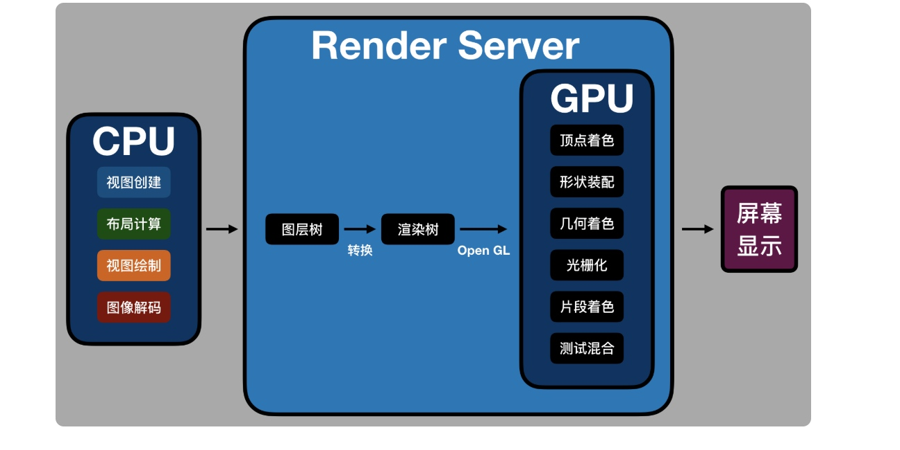

学习自 iOS开发高手课
渲染原理
App界面是由CPU和GPU共同计算处理
CPU内部流水线结构拥有并行计算能力，一般用于显示内容的计算。而GPU的并行计算能力更强，能够通过计算将图形结果显示到屏幕像素中。渲染就是将内存中的图形数据经过转换显示到屏幕上的过程。而负责执行这个过程的就是GPU
在渲染的过程中，GPU是需要处理屏幕上的每个像素点，并保证这些像素点的更新时流畅的
GPU的主要工作就是将3D坐标转换为2D坐标，再把2D坐标转为实际像素，实现的过程分为: 顶点着色器（确定形状的点）、形状装配（确定形状的线）、几何着色器（确定三角形个数）、光栅化（确定屏幕像素点）、片段着色器（对像素点着色）、测试与混合（检查深度和透明度）六个阶段
而我们OpenGL的标准库提供了编程能力，为了更方便的操作控制GPU
在渲染的过程中，CPU主要用来处理渲染内容的计算，比如视图创建、布局、图片解码等，内容计算完成后，再传给GPU进行渲染。CPU和GPU的相互配合，充分利用手机硬件来提升用户使用app的体验。而我们见到的界面卡顿等，就是以内CPU的计算时间超过屏幕刷新率的时间
在对比原生、大前端和Flutter谁更流畅，不就是对比在渲染过程中CPU计算内容谁会更快，谁就会更流畅了
原生渲染流程
原生的界面渲染，主要分为一下四步:
- 更新视图树，同步视图树
- CPU计算要显示的内容，包括视图创建（设置Layer属性）、布局计算、视图绘制（创建Lay的Backing Image）、图像解码转换等。当runLoop在
BeforeWaiting和Exit时，通知注册的监听，然后对图层打包，打包完成后，将打包数据发送给一个独立负责渲染的进程Render Server - 数据在到达renderServer后会被反序列化，得到图层树，按照图层树的图层顺序、RGBA值,图层frame过滤图层中被遮挡的部分，过滤后将图层树转换为渲染树，渲染树的信息会转换为OpenGL ES/Metal。前面CPU所处理的这些事情统称为
Commit Transaction Render Server会调用GPU,GPU开始进行前面提到的顶点着色器，形状装配、几何着色、光栅化、片段着色、测试与混合六个阶段。完成这6个阶段后，再将CPU和GPU计算后的数据显示在屏幕的每个像素点上。

补充:
渲染过程中的
Commit Trasaction的布局计算会重载视图的LayoutSubViews方法，以及执行addSubviews方法来添加视图。视图绘制会重载视图的drawReact方法。这个方法都是iOS开发中常用的我们执行的移动视图、删除视图、隐藏、显示视图、调用setNeedsDispaly或者setNeedsDispalyInRect方法 都会触发界面更新，执行渲染流程
大前端渲染
大前端的开发框架主要有两类：基于webView的和类似React Native的
第一类的WebView的大前端渲染，主要在webKit中完成。webKit的渲染层来自以前MacOS的LayerRendering架构，而iOS也基于这一套架构。所以本质上来看WebKit和iOS的原生渲染差别不大
ReactNative渲染直接走的原生渲染
至于我们觉得大前端渲染比原生慢的原因主要是：
从第一次内容加载来看，即使本地加载，大前端也比原生多出脚本代码解析工作。webView需要额外解析
HTML+CSS+Javascript代码，而类React Native方案则需要解析Json+Javascript。 当然HTML+CSS的复杂度要高于JSON,因此解析起来会更加慢一点。即，首次加载时，WebView会比类ReactNative慢从语言的本身解释执行性能来看，大前端加载后的界面更新会通过Javascript解释执行，而Javascript解释执行性能要比原生差，特别是解释执行复杂逻辑或大量计算时。所以大前端的运算速度，要比原生慢上不少
除了首次加载解析耗时外，js语言本身解释慢导致的性能问题这两点之外，WebView的渲染进程是单独的，每帧的更新都要通过IPC调用GPU进程。而频繁的IPC进程通信也会有性能损耗
webView的单独渲染进程还无法访问GPU的context，这样两个进程就么法共享纹理资源。纹理资源无法直接使用GPU的Context光栅化，那就只能通过IPC传给GPU进程，这也导致可GPU无法发挥自身的性能优势。由于WebView的光栅化无法及时同步到GPU，滑动时就容易出现白屏，就很难避免了。
相对于原生渲染来说，webView或者类ReactNative都因为脚本语言本身的西恩那个问题而存在性能差距。
Flutter渲染
Flutter界面是由Widget组成，所有的Widget组成Widget Tree，界面更新时会更新Widget Tree，然后再更新Element Tree，最后更新RenderObject Tree
接下来的渲染流程，Flutter渲染在FrameWork层会有Build、Widget Tree、Element Tree、RenderObject Tree、Layout、Paint、Composited Layed等几个阶段。将Layer进行组合，生成纹理，使用OpenGL接口像GPU提交渲染内容进行光栅化与合成，是在Flutter的C++层，使用的时Skia库。包括提交到GPU进程后，合成计算，显示屏幕的过程和iOS原生基本是类似的，因此性能相差不多
Flutter的主要优势是在于，它可以同时运行于Android和iOS两个平台。但是苹果公司在WWDC 2019上退出SwiftUI和Preview后，Flutter界面编写和Hot Reload的有事会逐渐降低